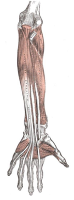
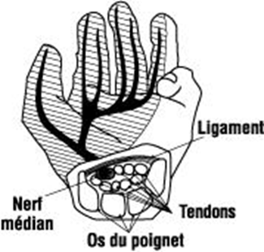
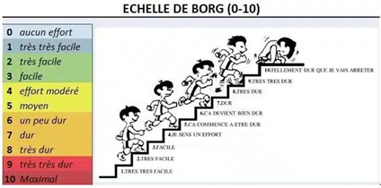
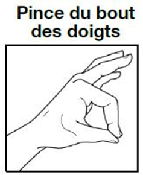
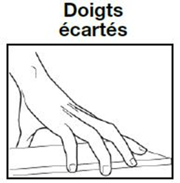
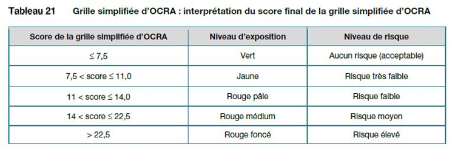
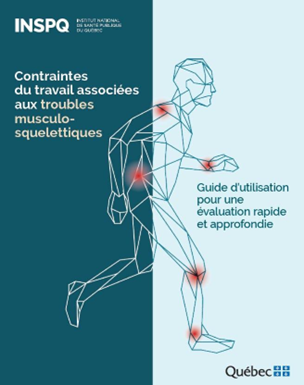

Travail répétitif
Le travail répétitif est l'utilisation variable mais répétée des mêmes structures musculosquelettiques, qu'il y ait ou non mouvement de l'articulation. Il est à la fois un facteur de risque direct des TMS et un modulateur des autres facteurs. La fatigue musculaire, les microlésions et la compression nerveuse sont les trois mécanismes lésionnels. Les méthodes OCRA permettent d'évaluer le risque.
Table des matières
- Définition
- Travail et ses éléments
- Mécanismes lésionnels
- Lignes directrices de prévention
- Cofacteurs
- Méthodes d'évaluation
- Application terrain
- Ressources
Définition
Le travail répétitif est l'utilisation variable mais répétée des mêmes structures musculosquelettiques, qu'il y ait mouvement de l'articulation ou non.
Invariabilité versus répétitivité
- L'invariabilité du travail fait référence à l'activité qui reste relativement la même au cours du temps.
- Un travail peut être répétitif sans être invariable, mais ne peut être invariable sans être répétitif.
Il n'y a pas de frontière nette. Définitions opérationnelles
- Cycle de travail inférieur à 30 secondes, ou
- Répétition des mêmes gestes pendant la moitié du temps de travail, ou
- Tâches durant lesquelles les mêmes actions sont répétées pendant plus de 50 % du cycle, pour au moins 1 h par quart, ou
- Tâches d'une durée consécutive d'au moins 1 h avec cycles de quelques minutes.
Travail et ses éléments
Le travail peut être réduit à un ensemble de tâches.
- Une tâche : objectif à atteindre.
- Un cycle de travail : séquence d'actions techniques répétées de la même façon (ex. désossage d'un poulet, remplissage d'une boîte).
- Des gestes élémentaires (actions techniques) : actions manuelles individuelles (se pencher, tourner, pousser, couper).
Mécanismes lésionnels
La plupart des tâches répétitives combinent travail musculaire statique et dynamique réalisé de façon cyclique. Trois mécanismes principaux.
Fatigue musculaire
Une fatigue musculaire s'établit quand les mêmes muscles sont sollicités constamment.
- ↓ capacité de production d'ATP.
- ↑ accumulation de déchets métaboliques.
- ↓ activité nerveuse.
Conséquences
- ↓ force musculaire.
- Changement dans la Biomécanique des mouvements.
- ↓ stabilité articulaire.
Voir Système musculaire pour le détail de la contraction et de l'apport sanguin.
Microlésions
Les contractions répétées entraînent des microlésions au niveau des fibres musculaires et tendineuses.
- Ces microlésions déclenchent une réponse inflammatoire.
- Temps de repos suffisant = ↑ force et résistance.
- Temps de repos insuffisant = dégénérescence chronique.
Compression nerveuse
Le stress mécanique (tension et friction) lié à la répétition peut générer inflammation et œdème.
- L'œdème comprime les nerfs à proximité des tendons.
- Exemple typique : syndrome du tunnel carpien (nerf médian au poignet).
{kind=link}

Toucher l'image pour l'agrandir{kind=link}

Toucher l'image pour l'agrandirLignes directrices de prévention
La répétition est particulièrement problématique lorsqu'elle est intense (fréquence élevée) et exécutée sur une longue période sans pause.
Fréquence
- Éviter les tâches dont le cycle est de moins de 30 secondes.
- Éviter les tâches avec plus de 30 gestes élémentaires par minute sur un membre.
Durée totale
- Ne pas dépasser 8 h / quart de travail répétitif.
- Éviter de passer plus de 50 % du quart sur la même tâche.
Pauses
- Pause minimale de 8 minutes toutes les 2 heures.
- Inclure des micropauses dans le cycle (2 à 15 secondes à chaque minute ou deux).
Cofacteurs
Plusieurs cofacteurs augmentent le risque associé au travail répétitif.
Force et effort
La force est souvent difficilement mesurable et varie selon l'individu. Utiliser l'échelle de Borg de perception d'effort (EPE).
{kind=link}

Toucher l'image pour l'agrandirLignes directrices
- Éviter les gestes répétitifs avec objets > 4 kg.
- Force de préhension max : 25 kg en prise pleine main, 5 kg en pince digitale.
- Éviter les efforts ≥ 5 sur l'EPE pendant plus d'une heure par quart.
- Outils lourds supportés mécaniquement.
Postures et mouvements contraignants
- Postures (pour toi) nécessitant un effort musculaire important.
- Mouvements brusques et rapides.
- Pinces digitales, doigts écartés.
Lignes directrices
- Limiter les postures hors amplitudes (max 4 cycles / min à angles très à risque).
- Limiter les tâches nécessitant une pince digitale.
- Éviter les postures statiques des épaules (fournir des appuis-bras).
{kind=link}

Toucher l'image pour l'agrandir{kind=link}

Toucher l'image pour l'agrandirGestes de précision
- Contraction de petits groupes musculaires spécifiques.
- Mauvaises positions ergonomiques fréquentes.
- Contractions synergiques de plusieurs muscles.
Lignes directrices : support des bras (poste ajustable), limiter la force nécessaire, rotation fréquente.
Facteurs physiques
Port de gants
- ↑ effort de préhension.
- Choisir des gants offrant adhérence, ajustement et flexibilité.
Froid
- ↓ débit sanguin musculaire.
- ↑ raideur musculaire.
- ↓ dextérité et contrôle moteur.
- Éviter les tâches répétitives en température froide.
Méthodes d'évaluation
Les méthodes OCRA
Méthodes d'observation structurée, base des normes EN 1005-5 et ISO 11128-3. Se concentrent sur les membres supérieurs.
Indice OCRA : tient compte de 6 paramètres
- Force appliquée.
- Durée du travail répétitif.
- Périodes de récupération.
- Effort selon l'échelle de Borg.
- Posture des membres supérieurs.
- Cofacteurs.
Grille simplifiée OCRA
{kind=link}

Toucher l'image pour l'agrandirEn raison de sa complexité, l'indice OCRA est rarement utilisé hors des ergonomes expérimentés. Le rôle de l'intervenant SST se restreint plutôt à la détection des tâches problématiques.
Évaluation rapide INSPQ
L'évaluation rapide de l'INSPQ représente un indice fiable et rapide pour détecter les tâches répétitives à risque (Stock, 2021 (source non publiée)).
{kind=link}

Toucher l'image pour l'agrandirVoir Outils d'évaluation ergonomique pour le détail.
Application terrain
Le travail répétitif est moins central en mine qu'en industrie manufacturière, mais existe à plusieurs postes.
| Poste minier | Tâche répétitive |
|---|---|
| Opérateur du concentrateur (table, flottation) | Échantillonnage cyclique, prises de mesure |
| Boulonneur | Cycle court pose de boulon (poignet, épaule) |
| Échantillonneur géologique | Manipulation d'échantillons, sciage de roche |
| Soudeur | Gestes cycliques sur pièces |
| Magasinier | Inventaire, manutention répétée |
| Mécanicien atelier | Démontage-remontage cyclique de composantes |
Cofacteurs en mine
- Froid (extérieurs hivernaux, chantiers ventilés) : aggrave le risque répétitif.
- Vibrations (outils pneumatiques) : aggrave par réflexe tonique vibratoire (voir Vibrations).
- Port de gants : effort de préhension accru.
Leviers en mine
- Rotation cyclique des tâches.
- Achat d'outils ergonomiques et de pinces sans effort.
- Supports mécaniques pour outils lourds.
- Pauses programmées et tournées en chantier moins répétitif.
Ressources
| Document | Type | Source |
|---|---|---|
| Cours SST 1162 - S6 - Travail répétitif | Cours | UQAT |
| Norme EN 1005-5 et ISO 11128-3 | Norme | EN, ISO |
| Méthode OCRA (Colombini) | Outil | EPM |
| Évaluation rapide INSPQ | Outil | INSPQ |
Articles wiki connexes
Pages qui pointent ici (11)
- 🏠 Wiki Ergonomie, mines Ergonomie
- 🚀 Démarrage rapide - Superviseur, contremaître Ergonomie
- Contraintes Ergonomie
- Facteurs de risque des TMS Ergonomie
- Horaires de travail atypiques Ergonomie
- Outils d'évaluation ergonomique Ergonomie
- Postures contraignantes Ergonomie
- Système musculaire Ergonomie
- TMS (troubles musculosquelettiques) Ergonomie
- Travail en environnement chaud Ergonomie
- Vibrations Ergonomie